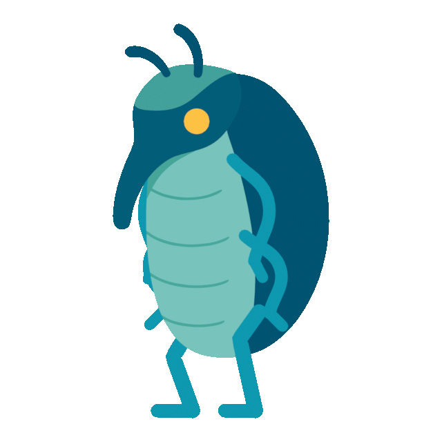
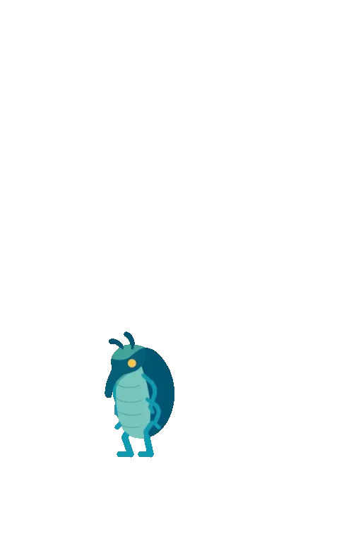
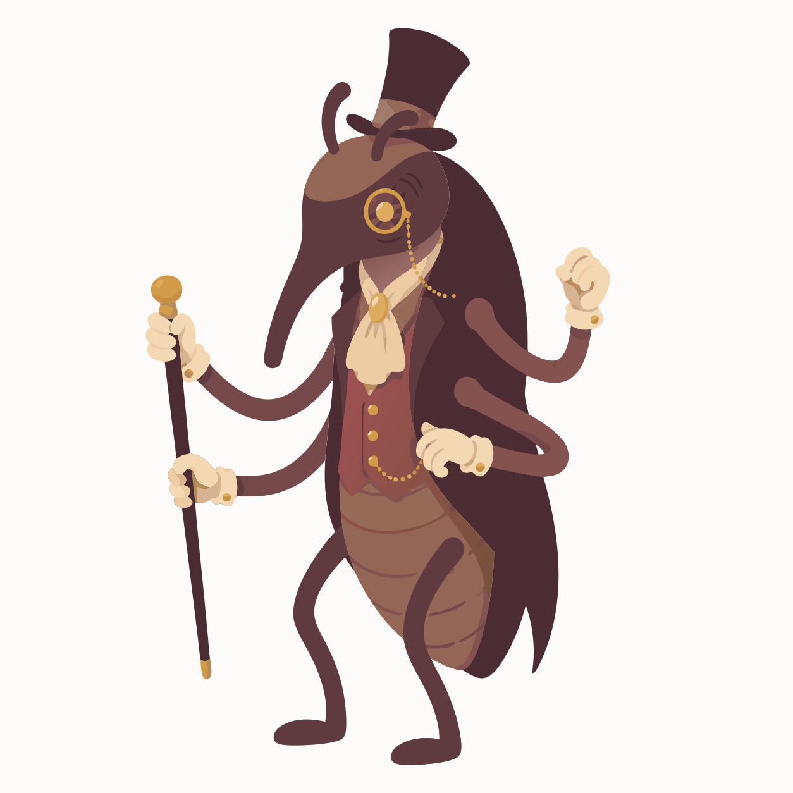

Welcome to Weevil World
Oddly specific quizzes, interactive curiosities, and discoveries of questionable importance.
Exhibit one · Personality assessment
What Weirdly Specific Thing Are You?
Six questions. Forty-five improbable outcomes. One answer that is somehow more accurate than it has any right to be.
Take the quizExhibit two · Minor divination
What Minor Omen Has Been Following You?
Six small questions about small things. One oddly specific sign, catalogued and filed, that's supposedly been trailing you.
Consult the cabinetBeyond the cabinet
The collection is still moving.
New interactive curiosities are being built — from quick questions to things you can properly get lost in. Duke Weevilton is cataloguing them as quickly as his four hands allow.


A note from the curator
"This collection concerns the overlooked, the oddly revealing, and the difficult to explain at parties. New exhibits are being catalogued regularly."
— Duke Weevilton, Curator of Oddly Specific Things
Collection status: suspiciously incomplete
Oddly specific
Experiences with more personality than a generic type label.
Made to share
Discoveries worth sending to a friend — or comparing with one.
Worth getting lost in
No productivity. No optimization. Just strange little worlds that respect your time.